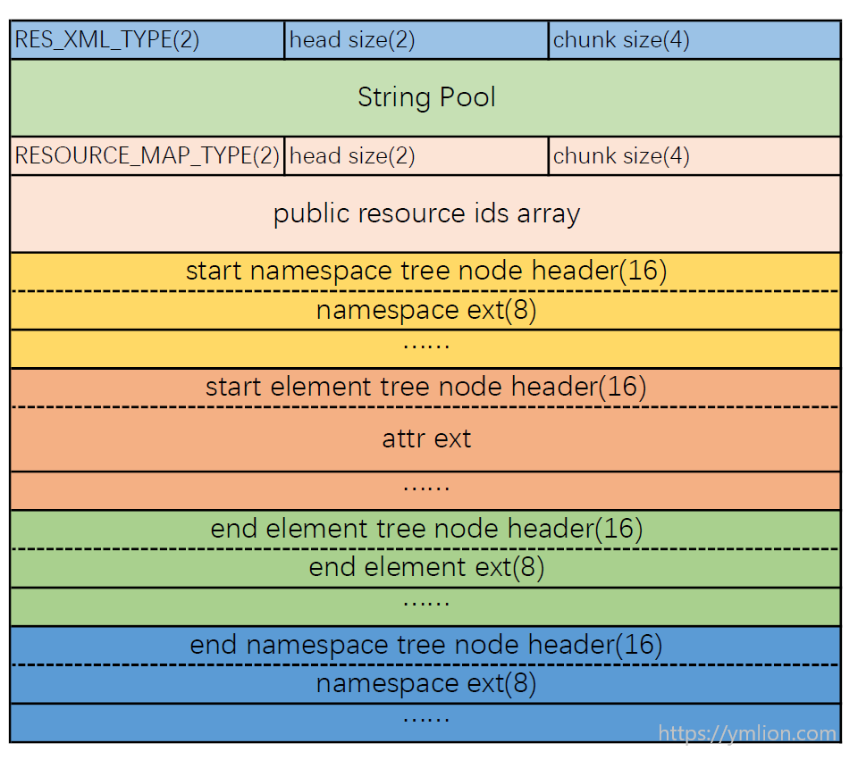

在Android资源编译和打包过程中，对于res目录下的所有xml文件，除去res/raw/文件夹下的文件不被处理，其他的xml文件都需要被编译，其中values下的xml资源文件解析之后就保存到资源索引表resources.arsc里面，其他xml文件都由文本格式编译为二进制格式，另外AndroidManifest.xml也是被编译为二进制格式。
二进制格式相比文本格式有很大的优势，想想resources.arsc解析，显而易见字节处理比文本处理效率更高，有合理的结构更容易解析，同时二进制格式占用空间更小。简单来说，资源文件编译和打包过程就是为了apk更小、package和应用运行时解析资源文件更快。
文件结构

整体看一下，看一看到有些部分和resources.arsc是相同的，其中两者都是以chunk组成。二进制xml文件开头是8字节的chunk头，类型是RES_XML_TYPE，并确定整个文件的大小；之后是资源字符串池，同样和resources.arsc是相同的，存放了xml文件中所用的字符串；然后是资源id数组数据块，类型是RES_XML_RESOURCE_MAP_TYPE，存放所有节点中有id的属性的id，像系统属性layout_width等和自定义属性，系统属性id值是固定的，如果整个文件中没有用到属性，则该数据块就不会出现；在后面就是xml文件中的节点了，由命名空间开始，经过各种节点，以及节点间的嵌套（节点开始和结束数据块交叉），最终由命名空间结束。
在资源id数据块中，如果当前的xml文件中有自定义的属性，则其对应的id是需要修改的，系统属性则不需要，所以在解析该部分时，需要判断id的第一个字节是否是0x7f，是则改之。
在开发时，创建的每一个xml文件都是由节点组成的，在二进制xml中，自命名空间开始才是xml的具体节点，而每个节点都是由节点头和节点类型扩展构成，下面看下节点头的定义：
1 | internal class ResTreeNodeHeader() { |
节点头16字节，包括chunk头和自定义的两个变量，其中自定义的行号和注释索引目前看来没有什么用，当然如果是反编译的话行号还是有用的。下面从命名空间开始，来看下每种节点的具体结构。
命名空间
在需要编译为二进制的xml文件中，除了自定义xml文件有可能没有命名空间，其他的所有文件都存在命名空间。命名空间有可能有多个，像在有自定义属性的xml文件中，会需要加一个命名空间，xml文件节点都是嵌套的，命名空间是第一个节点，同样也是最后一个节点，前后呼应，开始和结束节点结构完全相同，只是chunk类型不同。
命名空间开始节点类型是RES_XML_START_NAMESPACE_TYPE，结束类型是RES_XML_END_NAMESPACE_TYPE，除去节点头，后面是命名空间扩展，其定义如下：
1 | internal class NamespaceExt() { |
我们编写xml文件时，命名空间都是由两部分组成：前缀和URI，下面以一个实际的布局文件来说明：
1 | <?xml version="1.0" encoding="utf-8"?> |
一般情况下编写的xml文件，只有一个命名空间就是上面代码中的第一个，但有时也会用到其他的命名空间，在上面的布局文件中其他两个比较常用的也都有了。
android：系统属性的前缀，表明当前属性是系统定义的，有固定的id；app：自定义属性的前缀，像app:menu，当然这个前缀完全可以换个字符串，自定义属性id的第一个字节是0x7f；tools：简单来说就是在设计及编译阶段，提供一些特定功能，不影响实际打包及应用运行时的功能，像上面的tools:text可以在预览时显示文字，但实际运行时却没有；tools:context表明当前布局文件和哪个activity关联，在预览及编写布局时会提供帮助。当然还有很多其他属性，在官方文档中有详细介绍。
元素节点
命名空间之后就是具体的元素节点了，元素节点开始类型是RES_XML_START_ELEMENT_TYPE，每个元素都有多个属性，就像上面布局文件的每一个View，所以元素节点有节点头、属性扩展和属性数组构成，属性扩展定义如下：
1 | internal class AttrExt() { |
属性扩展共20字节，主要确定了当前元素的名称在字符串池中的索引以及属性的数量，其他变量暂时没有什么作用，基本都是固定的，像属性偏移位置为20，属性大小为20等。后面紧接着是属性数组，大小就是属性扩展中定义的数量，属性具体定义如下：
1 | internal class Attribute() { |
属性共20字节，定义了当前属性名称在字符串池中的索引，具体的值一般在ResValue中确定，ResValue和resources.arsc中资源项值定义时相同的，所以要修改的地方也是同样的，即ResValue.data。
无论元素是否有嵌套，总是会有与前面开始相呼应的结束数据块，在元素节点结束时，chunk类型是RES_XML_END_ELEMENT_TYPE，该数据块由节点头和元素结束扩展构成，具体定义如下：
1 | class EndElementExt() { |
8个字节，很简单，主要定义了结束元素的名称在字符串池中的索引。到此为止，在一开始的表中显示的结构都解析完了，但实际上还有一种元素节点类型没有解析，当然这种类型也很少出现，就是类似下面这种：
1 | <item>hello world<item/> |
这种没有属性，只有一个值的元素节点，在values文件夹下的xml中很常见，但values下的xml并不会被编译为二进制文件，所以自定义的xml中有可能有这种节点。而上面的各种数据结构都没有定义，这种元素节点有个专门的数据结构代替属性数组部分：
1 | internal class CDataExt() { |
这种节点属于CData节点，12字节，同样用一个ResValue来表示具体的数据，所以如果是这种节点，还要修改ResValue.data。
小结
二进制xml文件结构相对于resources.arsc简单多了，尤其是个节点都是前后对应的，整体解析过程如下：
1 | override fun parse(): Boolean { |
需要修改package id的地方有3个：资源id数据块中的每一个自定义id、元素节点属性值、CData节点值。
通过上一篇和这一篇，AAPT工具生成的二进制文件resources.arsc、AndroidManifest.xml和xml资源文件就都能修改package id了。AAPT工具还生成了另外两个文本文件R.txt和R.java，这两个就按行改就行了，不需要任何解析。到此，宿主和插件的资源冲突及资源共享问题基本算是可以解决了，具体实现代码都在android-res-parser库。